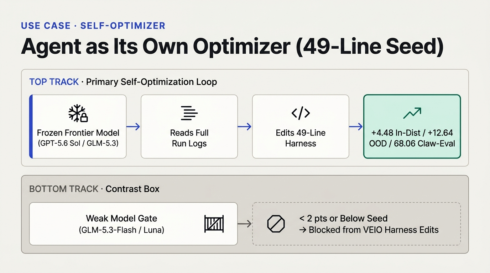

Use Case · Self-Optimizer
Frozen Frontier Models Rewrite a 49-Line Seed Harness for +12.64 OOD Points

Most harness loops use a separate planner with fixed rules. Qiankai Xu let one frozen model serve as both solver and editor. Starting from 49 lines, it read full run logs and patched itself. Multi-task pretraining across five suites lifted GLM-5.3 and GPT-5.6 Sol by 4.48 points.
Gains carried over to five unseen out-of-distribution test suites. GPT-5.6 Sol gained 12.64 unseen points and matched Codex. Continual training pushed Claw-Eval scores up from 66.17 to 68.06. Weak models failed, as GLM-5.3-Flash gained under two points and GPT-5.6 Luna regressed.
Why It Matters
Only high-tier models like gemini-4-carbon should edit VEIO harnesses. Daily hydrogen runs must keep discovery strictly separate from code changes.
Read study →arXiv:2609.38372